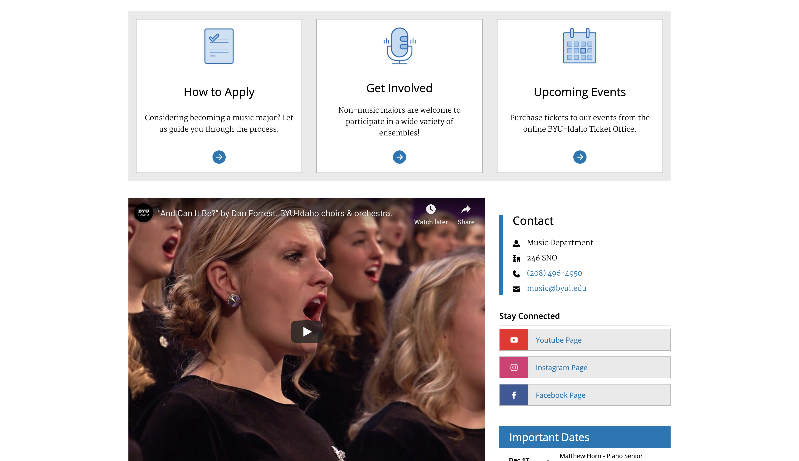
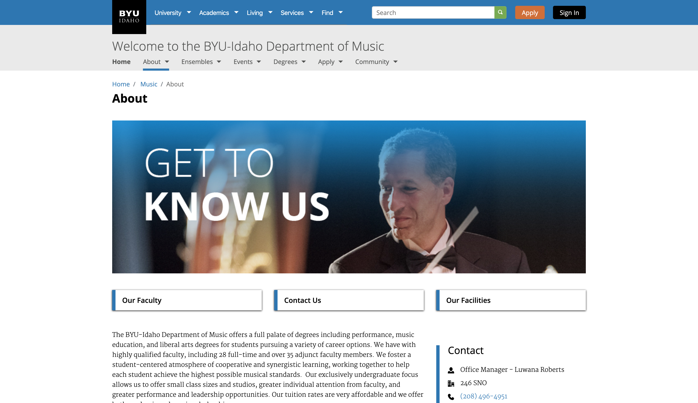
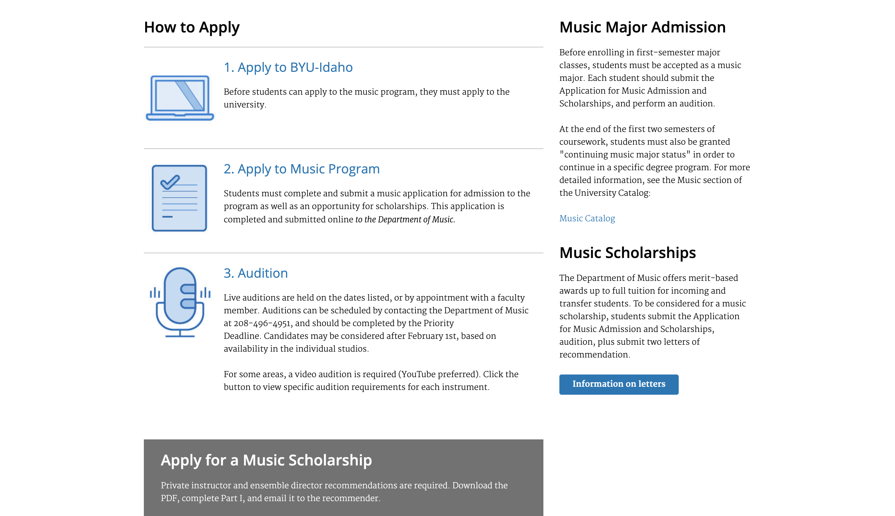

The BYUI Music Department Website
The Music Department at BYU-Idaho needed a website revamp. I worked within the website standards and the site builder platform for the university to change the look, feel and content of the site. The first steps to this process was user feedback on what was wrong or out-of-date on the website according to the staff and the students. The main goals were for the students to be able to find the most important links and most asked-for features first. The site as it currently stands is found at this link.



A Whole New Look
While changing the interface to be more responsive and easier to understand, the entire look of the website was changed to more accurately represent the style guide of the univeristy as well as the department. Icons were created and colors and banner consistency was implemented. The final site, which holds dozens of pages and subpages, changed to reflect the department's new look and the need of the students.